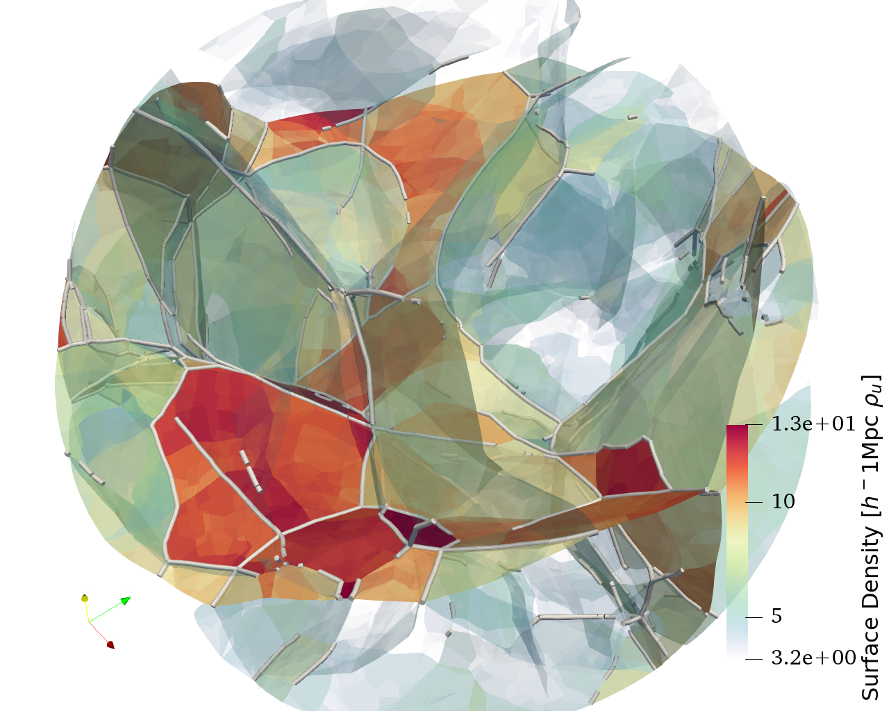
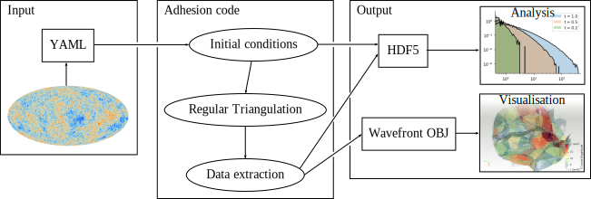
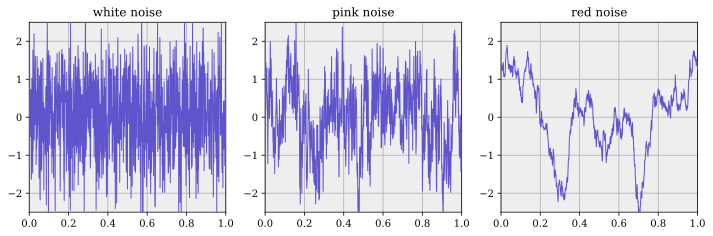
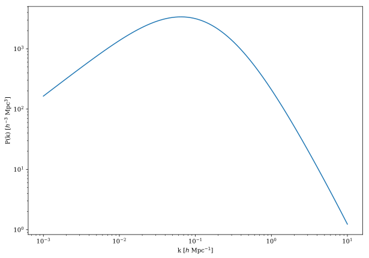
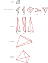
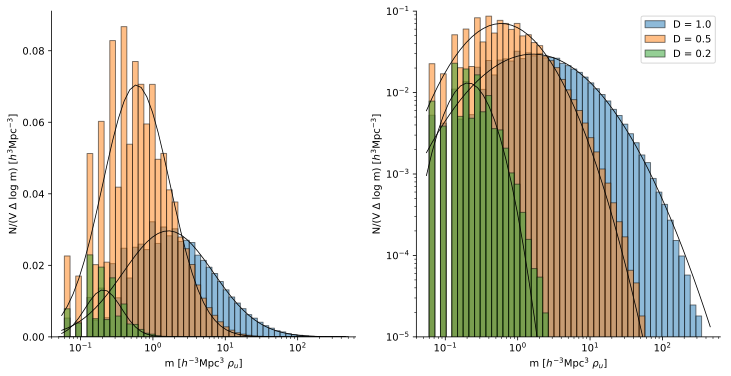

We present a (relatively) small example of using the CGAL (The CGAL Project 2018) library to run the adhesion model. This literate C++ code generates an initial potential field and computes the regular triangulation to that potential, which is a weighted generalisation of the Delaunay triangulation. The output is a selection of its dual, the power diagram or weighted Voronoi tessellation, written in a form that is ready for analysis and visualisation.
The adhesion model simulates the formation of structure in the Universe on the largest scales. The normal way to do this is to divide matter in the universe into discrete chunks, called particles, and follow their motion and gravitational potential in a lock-step iteration scheme, otherwise known as the N-body simulation.
The adhesion model takes an entirely different approach. It takes as input the initial velocity potential by which particles move, and from that, computes a direct approximation of the geometry of the structures that will form. This geometry is completely specified in terms of voids, walls, filaments and clusters, the structures that together shape the cosmic web. The adhesion model is accurate enough to predict the structures that will form the megaparsec scale of the cosmic web but doesn’t reveal the halo structures that are shown in N-body simulations to form inside these structures.
The code presented here computes the adhesion model using the Computational Geometry Algorithm Library (CGAL). The algorithms implemented in this library represent the state-of-the-art of computational geometry, among which is the algorithm to compute the regular triangulation of a weighted point set (Jamin, Pion, and Teillaud 2018b, 2018a).
Figure 1: Example output of the program, rendered with ParaView.
This document is aimed to be self-containing. This means that all the code to build a working adhesion model is included. We’ve tried to limit the involvement of too much boilerplate code by using existing libraries where possible. The main body of the code is covered in three sections. We start with generating initial conditions in the Fourier domain. Then we proceed with implementing the adhesion model on the basis of the algorithms and data structures provided by CGAL. We tie things together in a main executable that reads a configuration file and runs the model. The supplementary material contains necessary routines for dealing with Fourier transforms, IO and handling of mesh data.
Prerequisites
From the reader a basic knowledge of programming is required. Familiarity with C/C++ will help to understand the code samples. However, all the code is explained in detail. To run the code the following libraries should be present on the system:
HDF5 is used to store large blobs of binary data and meta data.
yaml-cpp
≥0.5
YAML-cpp is a YAML parser for C++. We use it to parse configuration files.
argagg
≥0.4.6
ArgAgg stands for Argument Aggregator and is a C++ command-line argument parser.
fmt
≥4.1
fmt is a string formatting library that has a similar interface as Python’s.
TBB
≥4.3
Threading Building Blocks is a Intel library for parallel computation in C++. This is an optional dependency. Versions after 4.4 (2016) are numbered after their release date.
Extracting the source code from the Markdown or building the report is done using the Pandoc document converter. Additional requirements are:
Package
Version
Description
Pandoc
≥2.2.1
Pandoc is a universal document converter. You’ll need a version with Lua filter support, which was added in Pandoc 2.0.
pandoc-citeproc
BibTeX support for Pandoc.
pandoc-eqnos
≥1.3.0
Number and reference equations. This extension was written in Python, it can be installed using pip install pandoc-eqnos.
pandoc-fignos
≥1.3.0
Number and reference figures. Another Python extension, install with pip install pandoc-fignos.
rsvg-convert
≥2.40
Convert SVG files.
All of these packages are available in the Debian GNU/Linux package repositories.
Literate programming
This example is written in a style of literate programming(Knuth 1984). This document contains a complete and functioning example of working with CGAL to compute the adhesion model. For didactic reasons we don’t always give the listing of an entire source file in one go. In stead, we use a system of references known as noweb(Ramsey 1994).
Inside source fragments you may encounter a line with <<...>> marks like,
These blocks of code can be tangled into source files. The source code presented in this report combine into a fully working example of the adhesion model!
Program outline
The program reads a YAML configuration file and writes output data to HDF5. YAML is an extension of the JSON data format aimed at human readability and is supported across many programming languages. HDF5 files can be read in all widely used data analysis frameworks, i.e. Python, GNU R, Julia or even Matlab if you’re so inclined.
The configuration file contains information about box size, initial conditions, and output specification. We generate initial conditions based on the \(\Lambda\)CDM cosmological model in the form of an initial velocity potential \(\Phi_0\). Then we run the CGAL regular triangulation algorithm on those initial conditions for any number of specified time steps. Note that the adhesion model is not an iterative scheme, so each time step is an independent computation.
Information about the nodes, filaments and walls is then extracted from the regular triangulation and stored in the HDF5 file. Additionally, we will create Wavefront OBJ files containing a sample of the generated structures. These files are suitable for display in most scientific visualisation packages. We used Paraview to create the screenshots presented in this report.
Figure 2: Outline of the program
Configuration
We read the configuration from a YAML file. This file specifies the box size, cosmology and the requested output. For the cosmological parameters we took the latest values from the Planck collaboration (Planck Collaboration et al. 2018).
In the output specification we inserted some syntax for formatting the output filename based on the time step. The {time:02.1f} part in the output filenames for walls and filaments will be replaced with the time parameter of the run. The precise syntax of these format expressions is specified in the documentation of the fmt library.
The threshold parameter is the square of the length at which we consider an edge to span a collapsed structure. In a triangulated grid edges can have a length of \(\sqrt{3} l_p\), where \(l_p\) is the resolution of the box \(l_p = L/N\). This means that the threshold should be set higher than \(3 L^2/N^2\). In this case, with \(L = 50.0 h^{-1} {\rm Mpc}\) and \(N = 128\), a threshold length of \(1.0\) is a safe choice.
Command line arguments
The main program has only few arguments. It reads configuration from a specified input file. We include the above configuration as a fallback if no arguments are given.
The ArgAgg library parses command-line arguments and composes the following help message when the user passes the --help flag:
Adhesion model example code -- (C) 2018 Johan Hidding
-h, --help
Show this help message.
--version
Show the software version.
-c, --config
Supply configuration file.
-d, --defaults
Show default configuration.
Initial conditions
We will generate an initial potential \(\Phi_0\), sampled on a cubic mesh with a logical size of \(N\) pixels on each side and a physical size \(L\) in units of \(h^{-1}{\rm Mpc}\). The corresponding initial density field will follow a CDM (without baryons) power spectrum, as given by Eisenstein and Hu (1999).
We’ll have box parameters (\(N\), \(L\) and derived quantities) stored in a BoxParam object that is defined in boxparam.hh. Given the box parameters and input cosmology, we have three steps in generating the initial conditions:
Generate white noise
Normalise power spectrum
Compute potential
The interface to these steps is collected in initial_conditions.hh.
We will first define the BoxParam class, then work on the implementation of the rest of the functions declared in initial_conditions.hh.
Creating the box
The logical and physical box sizes, \(N\) and \(L\), are needed in all of our computations. These parameters are collected into an instance of BoxParam, which has several methods that support working with coordinates in the box both in real and frequency space.
Note that we set the \(x\)-coordinate to be the fastest changing coordinate in the flattened array. This is known as row-major ordering, which the same as how indexing into C/C++ and Python/NumPy arrays works. This also means that when we use a std::array<size_t,3> as a 3-dimensional index into an array, the axes are reversed, so {z, y, x}.
Then we can compute the physical point by multiplying the integer position with the resolution of the box. This method accepts a template argument for the type of the Point. We’ll assume Point has a constructor that accepts the \(x\), \(y\) and \(z\) coordinates as arguments.
We’ll be indexing multi-dimensional arrays. To prevent having to write nested for-loops, we use the increment_index helper function. This increments the last index first, if it caries, set it back to zero and increment the next to last index and so on.
These functions we’ll need when we compute Fourier transforms. The real FFT algorithm saves precious memory by using only half the space of the complex FFT. With the exception of the Nyquist frequencies that makes \(N/2 + 1\) for the \(x\)-axis.
Next up, we need to compute the wave number of the Fourier mode represented at a certain index. With a physical box-size of \(L\) and a logical size of \(N\), we use the following convention
Having defined a box we need to fill it with initial density fluctuations. We first generate white noise in real space, then apply the power spectrum by method of Fourier convolution.
The initial conditions are randomly generated on a grid. We suppose a platonic ideal Gaussian random field that underlies our realisation. This is a function that is only defined in probabalistic terms. In cosmology it comes natural that these probabalities do not depend on location. For example, in the case of completely uncorrelated Gaussian white noise, we can ask: what is the probability that this function attains a certain value,
A function following only this distribution, without any corellation between points, is also referred to as white noise. We’re looking at quantities, like the density perturbation, that have mean \(\mu = 0\). When we generate white noise, we’re sampling a realisation of such a function \(f\) at a limited set of points. This should be considered in contrast with seeing a realisation as as integral quantities to a grid cell. Any integral of a white noise over a finite area results exactly in the mean value.
The white_noise function fills a newly created array with random values, following a normal distribution with \(\sigma = 1\).
To get an instance of a physically meaningful field, with non-zero integrals, requires that the values of the function \(f\) are positively correlated at the small scale. Taking any two positions \(x_1\) and \(x_2\), their correlation is
Often we write the correlation function \(\xi(r)\) because our fields are isotropic and homogeneous. We can now ask the next question: what is the probability that the function \(f\) at position \(\vec{x}\) attains the value \(f(\vec{x}) = y_1\) and at position \(\vec{x} + \vec{r}\) attains the value \(f(\vec{x} + \vec{r}) = y_2\),
Equation 2 (also known as the two-point distribution) can be generalised to a distribution of \(N\) variates, the multi-variate normal distribution. It can be shown that, in the case of a statistically homogeneous and isotropic random field, this distribution can always be reduced to the two-point distribution. In that case we refer to the random field as a Gaussian random field.
Figure 3: The colours of noise. From left to right we change the power spectrum from \(k^0\), to \(k^{-1}\), to \(k^{-2}\). The red noise can also be obtained by integrating a white noise signal. Red noise is an elemental example of a Markov process, as each value is computed from a state (the cumulative sum) and a random variate (the white noise).
Power spectrum
In Figure 3 we show three instances of a Gaussian random field with three different correlation functions. In stead of talking about a corellation function, we often use its Fourier transform, the power spectrum to specify the corellations in the random field,
We will now define the Eisenstein-Hu power spectrum and give a method to normalise the amplitudes to match the real Universe.
Eisenstein-Hu power spectrum
The power spectrum for CDM is given by an almost scale-free spectrum modified by a transfer function\(T_0\) which embodies post-inflation physics.
\[P(k) = A k^{n_s} T_0^2(k)\]
To compute \(T_0\) from the Boltzmann equation there exists a code called CMBfast, but most often people use a fitting function. Eisenstein & Hu (1997) give the following fitting formula for the CDM transfer function:
Figure 4: The CDM power-spectrum (without baryons).
Normalisation
The power-spectrum needs to be normalised so that the amplitudes of the density perturbations match those in the observed Universe. The chosen scaling is applied using a spherical top-hat filter of radius \(8\ h^{-1}{\rm Mpc}\). The latest measurements from Planck Collaboration et al. (2018) give \(\sigma_8 = 0.811 \pm 0.006\) of density perturbations linearly extrapolated to current epoch.
Now, given a density field \(f\) we may filter this field with a spherical top-hat function with radius of \(8\ h^{-1}{\rm Mpc}\) by means of a convolution \(f_R = f \ast W_{\rm th}\). Then \(\sigma_8^2 \equiv \langle f_8^{\star}f_8 \rangle\) can be expressed in Fourier space as \[\sigma_R^2 = \int \mathcal{P}(\vec{k}) \hat{W}_{\rm th}^2(\vec{k}) \frac{{\rm d}^3 \vec{k}}{{(2\pi)}^3}.\]
Because all terms in the integral only depend on \(|\vec{k}|\), we may rewrite this as \[\sigma_R^2 = \int_0^{\infty} \mathcal{P}(k)\ \hat{W}_{\rm th}^2(k R)\ k^2 \frac{{\rm d} k}{2 \pi^2}.\](3) The integrant in Equation 3 can be defined as the following lambda expression:
There’s a lot to say about how to normalise initial conditions properly, retaining the statistical properties of a larger ensemble and reducing excess shot noise from having a limited resolution (see e.g. Sirko 2005). In practice, good results are obtained by normalising using a numerical integration of Equation 3 from \(2 \pi / L\) to infinity, compensating for the power lost in the modes exceeding the box size. In particular we would like to fix the typical collapse times of structures of a certain size to be independent of resolution or box size.
The normalize_power_spectrum function computes the integral in Equation 3 using the Gauss-Konrod quadrature algorithm for integrals over a semi-infinite domain that is present in the GNU Scientific Library (Galassi et al. 2002). It then returns a new function of type PowerSpectrum.
Here we used some helper functions to encapsulate the GSL integration routines into a more friendly C++ wrapper, specified in the supplementary material.
Compute initial potential
We now apply the desired power spectrum to the previously generated white noise. This is done by transforming the white noise to the Fourier domain, multiplying it by the square root of the power spectrum, and then transforming back again. We use a C++ wrapper around the FFTW3 library (Frigo and Johnson 2005), which is listed in the appendix. The wrapper class RFFT3 allocates two vectors of memory for the input and output data. This is done using the FFTW routines, which ensure proper memory alignment for optimal algorithm efficiency. Note that our wrapper divides the result of the FFT computation by \(N^3\) to normalise the end result, an action which FFTW omits.
Since we’re working with a discrete Fourier transform and not the continuous used to normalise the power spectrum, we need to make sure not to lose any factors of \(N\) or \(L\). In practice this means we need to divide the power spectrum by the physical volume of a single voxel.
Also, we divide by \(k^2\) to compute the Zeldovich velocity potential, whereas the power spectrum specifies the linearly extrapolated power in the density perturbations.
We skip the first element of the array by starting on index {0, 0, 1} and iterating from 1 to \({\rm size} - 1\). The index of {0, 0, 0} coincides with \(k^2 = 0\), sometimes referred to as the DC component. This amplitude gives the summed value of all the (real-space) values in the field. The potential is gauge invariant, so the DC component is of no influence. Moreover, it would give us a division by zero if we were to try to compute it, resulting in a potential containing only NaNs.
Now that we have set up the initial conditions, we can run the adhesion model. Given a time \(t\), which is an alias for the growing mode solution of the linearised equations of structure formation, we can compute the regular triangulation weighted by the potential.
Theory
Normally, we derive the fact that we can solve the adhesion model using regular triangulations from existing solutions (Hopf 1950) of the equation of motion, Burgers equation, \[\partial_t {\bf v} + ({\bf v} \cdot {\bf \nabla}) {\bf v} = \nu \nabla^2 {\bf v}.\](4) We may also understand this idea from a more kinematic point of view.
We assume an ensemble of particles moving by a potential \(\Phi_0({\bf q})\) from their starting position \({\bf q}\) to a target position \({\bf x}\),
This is known as the Zeldovich approximation (Zeldovich 1970; Shandarin and Zeldovich 1989). This has the problem that particles continue to move in a straight line, even after structures form. We’d like to have particles adhere together once they form structures, hence the name: adhesion model.
Figure 5: The Zeldovich Approximation. Each particle is given a velocity equal to \(v = -\nabla \Phi_0\). Structures form, but there is no dynamics involved.
\[{\bf x} = {\bf \nabla}(\frac{q^2}{2} - t \Phi_0({\bf q}) + C) = {\bf \nabla} \varphi,\](6)
introducing the new potential \(\varphi({\bf q}) = q^2/2 - t\Phi_0\). The adhesion model is found by using not the potential \(\varphi\) but its convex hull\(\varphi_c\). The derivative of a convex function is monotonic, therefore particles can no longer cross as they do in the Zeldovich Approximation. This argument is a gross oversimplification of the underlying theory. We refer to Hidding et al. (2018) for more detail.
The power diagram
We won’t be computing the convex hull of \(\varphi\) explicitly. In stead we use the regular triangulation algorithm. The regular triangulation is the dual of the power diagram. The power diagram is the weighted generalisation of the Voronoi tessellation. Given a subset of points \(S \in Q\), we define a cell \(V_u\) in the power diagram as follows:
CGAL comes with a set of geometry kernels. Each kernel bundles basic type definitions like Point, Vector, Circle, etc. and geometric operations on those types. Depending on the requirements of the programmer, we can choose different implementations of these concepts. These implementations vary in representation of real numbers, vector quantities, and how geometric operations are computed on them. Some abstract applications require an exact representation of numbers while other more cosmological applications can afford to be more liberal with regards to exactness.
The algorithms that actually do the advanced geometric computations, like the regular triangulations we use, are implemented in generic terms using C++ template techniques. We need to supply those algorithms the correct geometry kernel for our application. This is why all CGAL programs start with a list of template type definitions.
In our case, what we need is a double precision floating point representation of numbers, while retaining logical consistency in geometric predicates, of which the co-linearity test is the most obvious example. This is provided by the Exact_predicates_inexact_constructions_kernel kernel.
We collect those type definitions in a separate header file:
Since we’ll be using bare (weightless) points, weighted points, and vectors we defined aliases for those types. Note that CGAL is particular about the difference between points and vectors. Points are locations without absolute properties, whereas vectors describe how to get from one point to the other. Internally they can have the same numerical representation, but this may not strictly be the case for all geometry kernels.
We enable two versions of the code: serial and parallel. The parallel version requires Threading Building Blocks to be installed. The regular triangulation data structure gets tagged with CGAL::Parallel_tag which enables parallel versions of the algorithm.
We give each point in the grid a weight proportional to the velocity potential, \[w_i = 2 t \Phi(q_i).\] Then we insert these weighted points into the triangulation.
To implement a parallel version of the code, we need two extra bits of code in the class definition as well as the implementation of the constructor. We have to define a lock data structure which keeps a grid of localized locks.
Then in the constructor the lock has to be initialised with the shape of the box and an indication of the granularity of the grid on which to lock points.
The CGAL regular triangulation code should take care of the rest. Note however, that in current versions of CGAL (4.12) this feature is highly unstable and has been known to produce segmentation faults. Work continues to improve the parallel algorithms.
Node properties
We will first see how to extract properties of nodes from the regular triangulation. Later on, we’ll look at the duals of edges and faces to visualise the walls and filaments more directly.
To understand how we get to the shape of a tetrahedron, we first have to understand how triangulations in CGAL are stored and accessed.
CGAL Triangulation data structures
First of all, the points in a triangulation are stored in a separate list. We can retrieve the actual point belonging to a vertex by indexing that list. The triangulation data structure then only deals with vertex handles, which is just an alias for an integer.
Second, the triangulation itself stores a list of cells. Each cell has four vertex handles and four cell handles pointing to the neighbours of the cell. Again a cell handle may be implemented with as little as an integer index into the list of cells. The neighbouring cell handles are stored in the same order as the vertices, that is, each neighbouring cell corresponds to its opposite vertex.
Edges are not stored, but represented as a cell handle and two indices between zero and three (inclusive). Similarly, facets are represented as a cell handle and the opposite vertex. More about the CGAL triangulation data structure can be read in the CGAL manual.
Node types
Any node in the power diagram can be of the type void, kurtoparabolic, wall, filament, cluster or undefined. This last category is a catch-all that really shouldn’t happen.
A kurtoparabolic(Frisch and Bec 2001) is a point where a wall ends in a void. In the Zeldovich approximation we would see a cusp here, so the kurtoparabolic points are equivalent to \(A_3\) singularities in Arnold’s ADE classification (Arnold, Shandarin, and Zeldovich 1982; Hidding, Shandarin, and Van de Weygaert 2014).
Note that the masses of any cell other then the cluster cells carry no physical meaning, unless somehow corrected for the resolution of the box. If we double the resolution, the average mass of a void particle drops by a factor eight, the average mass of a wall particle by a factor four, and the average mass of a filament particle by a factor two. Also we know that the total mass is conserved.
On the other hand, part of the distribution in masses is determined by the kind of shapes a tetrahedron can take. We show all possibilities in Figure 6.
Figure 6: Shapes of tetrahedra. Here we list all possible shapes a tetrahedron can take, given that we put a threshold on the length of the edges.
Note that there are many species of kurtoparabolic points. The ones listed under ‘kurto-parabolics’ have all their vertices connected by short edges. Most of these would show walls ending in voids, but there is one, kurto-parabolic e, which has a filament (and three wall segments) ending in a void.
There is a sixth tetrahedron for which the simple classification of void, wall, filament or cluster is ambiguous, namely wall type c. One of the faces of this tetrahedron would classify as a filament, but looking at the connectivity of the vertices this tetrahedron would classify as a wall. At such a tetrahedron a filament runs into a wall.
The filament and cluster classifications are completely unambiguous. Their number of long edges and number of components connected by short edges both uniquely determine their type.
Filtering for structures
When we want to select filaments or clusters we need to count how many edges of a certain cell in the regular triangulation exceeds a given threshold. The function Adhesion::edge_count takes a cell handle and a threshold and returns the number of long edges. This count determines if the cell is part of a void, wall, filament or node.
edge count
structure
0
void
1 - 2
kurtoparabolic point
3 - 4
wall
5
filament
6
node
This table translates to the following helper function:
To compute the velocity of a particle (a node in the power diagram), we need to compute the gradient of the velocity potential over the corresponding cell in the regular triangulation. We can use CGAL here to do the hard work for us. The d-dimensional geometry kernel lets us compute the hyperplane associated with the four vertices of the cell in the triangulation.
Then we create the hyperplane associated with these points, taking care to have the orientation such that the normal is pointing in positive w direction. This is done by having the guide point \((0, 0, 0, -\infty)\) on the negative side of the hyperplane.
Given the normal \(\vec{n}\), the velocity vector is given by \[v_i = \frac{n_i}{2 t n_w},\] where \(i\) indexes the \(x\), \(y\) and \(z\) components.
The power diagram is the dual of the regular triangulation. CGAL supports saving the power diagram directly as an OFF file, or alternatively to send information to GeomView. For our purpose these options are not good enough. Our goal is to make a picture of the structures. For this we need to filter out any structures below a certain threshold. Then we want to store the density of the walls along with the faces and the density of filaments along with the edges.
In this case we’ll store them as Wavefront OBJ files. This is a text based file format, so we can’t store too large amounts of data. However, it is well supported by most visualisation toolkits and has the option to store a little bit of extra data in the texture coordinates. Texture coordinates are normally used to map images onto 3D surfaces, hence they have two dimensions, \(u\) and \(v\). We’ll only use the \(u\) coordinate to store the density of the walls. The procedure for saving OBJ files is given in the Appendix.
We’ll define the function that computes the duals of the regular triangulation and stores it in a structure we call Mesh<Point, double>.
The Mesh structure contains a vector of points vertices, a vector of integers data indexing into the vertices vector, and a vector of integers indicating the size of each polygon. Additional information on the polygons is stored in an vector of Info. In our application the Info datatype will be a double value indicating the density of the walls or filaments stored in the mesh.
This definition of Mesh is slightly more involved than using a vector<vector<unsigned>> to encode the polygons of the mesh. However, the added complexity of such a data structure makes it harder to save and restore binary versions in standard data containers like HDF5. Also when data sizes get very large, using one large vector to store the data is more efficient than using many smaller ones.
We defined two methods to the Mesh structure. The size() method gives the amount of polygons in the mesh.
The implementation of power_diagram_faces loops over all edges in the regular triangulation. For each edge we check if its length exceeds the threshold, then collect the dual vertices and add the polygon to the mesh.
Next we extract the power diagram vertices of the wall by looping over all incident cells of the edge. Because the iteration of the incident cells is circular we cannot use a normal for-loop. In stead, we use a do-while loop where the predicate is evaluated after each iteration. We need to take care not to include the infinite cell that represents everything outside the triangulation. If the infinite cell is encountered, this means that the edge is on the boundary of the triangulation. In that case the entire facet is dropped from the output.
Note that we have not yet defined the get_dual_vertex function in «pd-collect-dual». We will do so now.
Dual vertex
Every cell in the regular triangulation is associated with a vertex in the power diagram. We write a small helper function that obtains this dual vertex and caches it in a map. This ensures that every cell in the triangulation is mapped to a single unique vertex in the resulting mesh.
We do not want to get the dual of all edges in the regular triangulation. Only those edges that exceed a given length are ‘physical’ objects. We check if the squared length of the edge e is larger than the given threshold:
For filaments this procedure is slightly more involved. A filament is the dual of a regular facet. The facet is encoded as a cell (one of the co-faces of the facet) and the vertex of that cell that is opposite the facet. We need to check the lengths of all the edges of the facet, so we need to iterate all combinations of vertices of the co-face not containing the given opposite vertex. This procedure is illustrated in Figure 7.
Figure 7: Selecting filaments. The dual of a facet in the regular triangulation is an edge in the power diagram. The power edge represents a filament in the adhesion model if all edges of the regular facet exceed the threshold. For this power edge \(\overline{AB}\), suppose we are checking the validity of the facet \(\overline{134}\). This facet is returned as the combination of a cell and the vertex opposite the facet, in this case \((\overline{A},\overline{2})\). To iterate the edges of this facet, we find all combinations \(\overline{ij}\), where \(1 \le i < j \le 4\), and \(i, j \neq 2\).
Function body (walls)
Collecting these steps, the rest of the implementation of power_diagram_faces is as follows:
The implementation for the filaments is very similar. In the case of a facet in the regular triangulation, we only need to compute the dual of the two co-faces of the facet. Again, in CGAL the facet is represented as one of the two co-faces and the vertex opposite the facet. This means there are two ‘mirror’ representations of the same facet. To get the other co-facet we can query the triangulation for the mirror facet.
We think it is important to make the step from abstract mathematics to physical model explicit. The implementation of the get_walls method is now trivial though.
When we’re all done, we can write the initial conditions to the output file for future reference. We have written an easy wrapper around the HDF5 routines, letting us write the statement in a single line. The wrapper can be found in the supplementary material.
In each iteration we run the adhesion model. We then write results to a new HDF5 group, and also to a series of Wavefront OBJ files. We already covered the implementation of the adhesion model. All that’s left is calling the Adhesion constructor.
This can then be read back to Python to plot our measurements. For example, the cluster mass function is shown in Figure~8.
Figure 8: Cluster mass function. We took all nodes that identify as clusters and plot the distribution of the logarithm of their mass, that is, the number of objects per \(h^{-3}{\rm Mpc}^3\) per logarithmic bin \(\Delta \log M/M^*\) where \(M^*\) is \(\rho_u h^{-3}{\rm Mpc}^3\). The solid lines show a fit with a log-normal distribution. Note that we see an increase in the number of objects at intermediate redshift, which then get merged into more massive clusters.
The help and version arguments are considered to be a standard interface for command-line programs. See for instance the GNU Sofware Standards.
If the defaults argument is given, we print the default configuration as specified in the introduction. The user can use this to write this configuration to a file and edit it to wishes accordingly.
If none of the help, version or defaults arguments is given, we proceed reading the configuration from file, or if no filename is given, use the defaults.
To visualise a structure it is important to limit the visualisation to a specific region. Otherwise the image is flooded with too many polygons and we lose the aim of visualisation: making structures visible.
To select parts of a mesh we need to define a surface that can tell us on what side a point lies, and if we have two points, if and where the segment between those points intersects. This concept of a Surface is embodied by the following abstract base class:
Given an implementation of such a class, we can implement a function that will split a polygon in two parts, each on either side of the surface. This makes certain assumptions about the surface and the polygon that will not always hold, but suffice for our purposes of visualisation.
We’re using a library feature of C++17, namely std::optional. In C++14, this is included in the std::experimental namespace. With this macro, we can use std::optional in both cases.
Unfortunately CGAL seems to have no function to compute the intersection of a Sphere with a Segment. We’ll take the opportunity to do some algebraic geometry our selves. The Sphere data type will have two members:
Next, given a directed segment from \(\vec{a}\) to \(\vec{b}\), we’d like to know if and where the segment will intersect the sphere first. This is done by solving a quadratic equation in terms of the vector going from \(\vec{a}\) to \(\vec{b}\), \(\vec{m} = \vec{b} - \vec{a}\), and the vector from the origin \(\vec{o}\) to \(\vec{a}\), \(\vec{n} = \vec{a} - \vec{o}\).
The points on the segment are given by the function \[s(t) = \vec{a} + t\vec{m}.\] And the sphere is defined by the equation \[(\vec{x} - \vec{o})^2 = r^2.\] Then the resulting equation is, \[s^2 = (\vec{a} + t\vec{m} - \vec{o})^2 = n^2 + 2t \vec{n} \vec{m} + m^2 t^2,\] which is solved by, \[t = \vec{m}\cdot\vec{n} \pm \sqrt{m^2 (n^2 - r^2)}.\]
If the discriminant \(D = m^2 (n^2 - r^2)\) is negative, there is no intersection. We reflect this by returning a std::optional<Point>. Also, we only return a point if the found solution is for \(0 \le t \le 1\).
Once we have selected a part of the mesh by cutting polygons, the mesh contains a lot of vertices that have no associated polygon. These vertices need to be removed. This also means that the vertex indices contained in the logical polygon data need to be remapped. The clean function takes a Mesh, only copies the vertices that are referenced in the polygons and remaps the polygons, creating a new Mesh instance.
Arnold, V. I., S. F. Shandarin, and Ya. B. Zeldovich. 1982. “The large scale structure of the universe. I - General properties One- and two-dimensional models.” Geophysical and Astrophysical Fluid Dynamics 20: 111–30. https://doi.org/10.1080/03091928208209001.
Eisenstein, D. J., and W. Hu. 1999. “Power Spectra for Cold Dark Matter and Its Variants” 511 (January): 5–15. https://doi.org/10.1086/306640.
Frigo, Matteo, and Steven G. Johnson. 2005. “The Design and Implementation of FFTW3.” Proceedings of the IEEE 93 (2): 216–31.
Frisch, and Bec. 2001. “Burgulence.” arXiv nlin: 0012033v2.
Galassi, Mark, Jim Davies, James Theiler, Brian Gough, Gerard Jungman, Patrick Alken, Michael Booth, and Fabrice Rossi. 2002. “GNU Scientific Library.” Network Theory Ltd 3.
Hidding, Johan, Rien Van de Weygaert, Mark Neyrinck, and Gert Vegter. 2018. “The Adhesion Model – the Dual Geometry of the Cosmic Web” to be subm. (-): –.
Hidding, J., S. F. Shandarin, and R. Van de Weygaert. 2014. “The Zel’dovich approximation: key to understanding cosmic web complexity” 437 (February): 3442–72. https://doi.org/10.1093/mnras/stt2142.
Hopf, Eberhard. 1950. “The Partial Differential Equation \(u_t + uu_x = \mu_{xx}\).” Communications on Pure and Applied Mathematics Vol. 3, No. 3: 201–30. https://doi.org/10.1002/cpa.3160030302.
Knuth, Donald Ervin. 1984. “Literate Programming.” The Computer Journal 27 (2). Oxford University Press: 97–111.
Planck Collaboration, N. Aghanim, Y. Akrami, M. Ashdown, J. Aumont, C. Baccigalupi, M. Ballardini, et al. 2018. “Planck 2018 results. VI. Cosmological parameters.” ArXiv E-Prints, July.
Shandarin, S. F., and Ya. B. Zeldovich. 1989. “The large-scale structure of the universe: Turbulence, intermittency, structures in a self-gravitating medium.” Reviews of Modern Physics 61 (April): 185–220. https://doi.org/10.1103/RevModPhys.61.185.
Sirko, Edwin. 2005. “Initial Conditions to Cosmological N-Body Simulations, or, How to Run an Ensemble of Simulations.” The Astrophysical Journal 634 (2): 728. http://stacks.iop.org/0004-637X/634/i=2/a=728.

![Figure 7: Selecting filaments. The dual of a facet in the regular triangulation is an edge in the power diagram. The power edge represents a filament in the adhesion model if all edges of the regular facet exceed the threshold. For this power edge \overline{AB}, suppose we are checking the validity of the facet \overline{134}. This facet is returned as the combination of a cell and the vertex opposite the facet, in this case (\overline{A},\overline{2}). To iterate the edges of this facet, we find all combinations \overline{ij}, where 1 \le i < j \le 4, and i, j \neq 2.](figures/edge-iteration.svg)